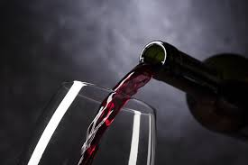

Vinheria Agnello
Aqui na vinheria Agnello trazemos todo e qualquer tipo de vinho do mercado, dos mais variados tipos, marcas e sabores:
Para quem quer custo benefício ou quer algo da alta elite.
Bem-vindo ao Mundo dos Vinhos: Descubra a Arte e a Paixão por Trás de Cada Garrafa
Nosso universo de descoberta e apreciação de vinhos finos.
Aqui, mergulhe em uma jornada sensorial que vai além do simples ato de beber, mas sim na exploração de um mundo vasto e fascinante, onde cada garrafa conta uma história única e carrega consigo séculos de tradição, arte e paixão.
Em nosso site, convidamos você a explorar as nuances e os segredos por trás de vinhos de diferentes regiões, castas e estilos.
Seja um entusiasta experiente ou alguém que está apenas começando a descobrir o mundo dos vinhos, temos algo especial reservado para todos os paladares e níveis de conhecimento.
Deixe-se envolver pela riqueza de aromas, sabores e texturas enquanto desvenda os mistérios do terroir, aprende sobre técnicas de vinificação e mergulha nas histórias das vinícolas mais renomadas do mundo.
A cada clique, você se aproximará um pouco mais da riqueza cultural e da arte que envolvem essa bebida tão especial.